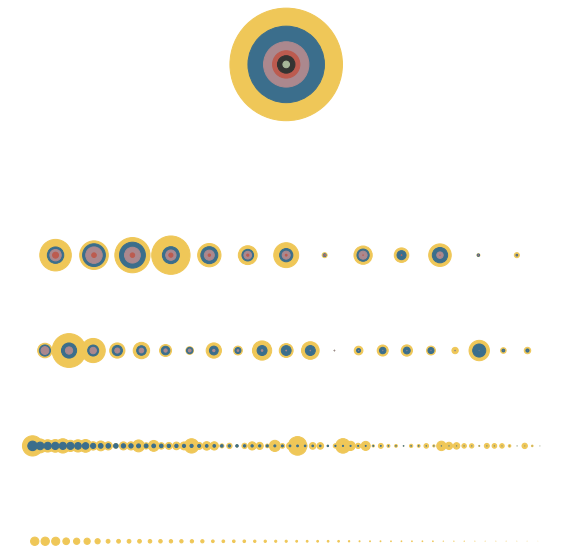

Composition of signatures within TTWA boundaries¶
import geopandas
import pandas
import tobler
tobler.__version__
'0.9.0'
https://services1.arcgis.com/ESMARspQHYMw9BZ9/ArcGIS/rest/services/TTWA_2011_UK/FeatureServer
url = "https://services1.arcgis.com/ESMARspQHYMw9BZ9/arcgis/rest/services/TTWA_2011_UK/FeatureServer/0/query?where=1%3D1&objectIds=&time=&geometry=&geometryType=esriGeometryPolygon&inSR=&spatialRel=esriSpatialRelIntersects&resultType=none&distance=0.0&units=esriSRUnit_Meter&returnGeodetic=false&outFields=&returnGeometry=true&returnCentroid=false&featureEncoding=esriDefault&multipatchOption=xyFootprint&maxAllowableOffset=&geometryPrecision=&outSR=&datumTransformation=&applyVCSProjection=false&returnIdsOnly=false&returnUniqueIdsOnly=false&returnCountOnly=false&returnExtentOnly=false&returnQueryGeometry=false&returnDistinctValues=false&cacheHint=false&orderByFields=&groupByFieldsForStatistics=&outStatistics=&having=&resultOffset=&resultRecordCount=&returnZ=false&returnM=false&returnExceededLimitFeatures=true&quantizationParameters=&sqlFormat=none&f=pgeojson&token="
ttwa = geopandas.read_file(url)
ttwa
| TTWA11CD | geometry | |
|---|---|---|
| 0 | E30000004 | POLYGON ((-1.34865 53.58333, -1.32673 53.55813... |
| 1 | E30000018 | POLYGON ((-1.93086 53.95027, -1.89833 53.92398... |
| 2 | E30000029 | POLYGON ((-1.73679 53.70811, -1.73128 53.68037... |
| 3 | E30000039 | POLYGON ((-2.00451 54.17288, -1.99254 54.15528... |
| 4 | E30000046 | POLYGON ((-2.26489 50.75912, -2.24239 50.75563... |
| ... | ... | ... |
| 223 | W22000030 | MULTIPOLYGON (((-4.77992 52.76561, -4.80242 52... |
| 224 | W22000031 | POLYGON ((-3.14509 53.26082, -3.17735 53.24382... |
| 225 | W22000032 | POLYGON ((-3.47007 51.82850, -3.47633 51.80947... |
| 226 | W22000033 | POLYGON ((-3.48307 52.86552, -3.50541 52.84191... |
| 227 | W22000034 | POLYGON ((-2.72684 52.98327, -2.73532 52.97002... |
228 rows × 2 columns
# drop NI
ttwa = ttwa[~ttwa.TTWA11CD.str.startswith("N")]
ttwa.plot()
<AxesSubplot:>

ttwa.to_parquet("../../urbangrammar_samba/spatial_signatures/esda/ttwa.pq")
<ipython-input-30-01f59cdfba9b>:1: UserWarning: this is an initial implementation of Parquet/Feather file support and associated metadata. This is tracking version 0.1.0 of the metadata specification at https://github.com/geopandas/geo-arrow-spec
This metadata specification does not yet make stability promises. We do not yet recommend using this in a production setting unless you are able to rewrite your Parquet/Feather files.
To further ignore this warning, you can do:
import warnings; warnings.filterwarnings('ignore', message='.*initial implementation of Parquet.*')
ttwa.to_parquet("../../urbangrammar_samba/spatial_signatures/esda/ttwa.pq")
ttwa = geopandas.read_parquet("../../urbangrammar_samba/spatial_signatures/esda/ttwa.pq")
signatures = geopandas.read_parquet("../../urbangrammar_samba/spatial_signatures/signatures/signatures_combined_levels_simplified.pq")
# drop an outlier island
signatures = signatures.drop(96691)
types = {
"0_0": "Countryside agriculture",
"1_0": "Accessible suburbia",
"3_0": "Open sprawl",
"4_0": "Wild countryside",
"5_0": "Warehouse/Park land",
"6_0": "Gridded residential quarters",
"7_0": "Urban buffer",
"8_0": "Disconnected suburbia",
"2_0": "Dense residential neighbourhoods",
"2_1": "Connected residential neighbourhoods",
"2_2": "Dense urban neighbourhoods",
"9_0": "Local urbanity",
"9_1": "Concentrated urbanity",
"9_2": "Regional urbanity",
"9_4": "Metropolitan urbanity",
"9_5": "Hyper concentrated urbanity",
}
signatures["signature_type"] = signatures["signature_type"].map(types)
signatures = signatures[["signature_type", "geometry"]].dropna()
signatures
| signature_type | geometry | |
|---|---|---|
| 0 | Countryside agriculture | POLYGON ((62219.999 798499.999, 62109.999 7985... |
| 1 | Countryside agriculture | POLYGON ((63507.682 796515.168, 63471.096 7965... |
| 2 | Countryside agriculture | POLYGON ((65953.174 802246.171, 65523.864 8023... |
| 3 | Countryside agriculture | POLYGON ((67297.740 803435.799, 67220.290 8034... |
| 4 | Countryside agriculture | POLYGON ((75760.000 852669.999, 75699.999 8527... |
| ... | ... | ... |
| 96686 | Hyper concentrated urbanity | POLYGON ((528530.169 181095.720, 528544.721 18... |
| 96687 | Hyper concentrated urbanity | POLYGON ((528602.733 181135.451, 528572.629 18... |
| 96688 | Hyper concentrated urbanity | POLYGON ((528643.907 181217.443, 528632.000 18... |
| 96689 | Hyper concentrated urbanity | POLYGON ((528734.583 181316.821, 528722.252 18... |
| 96690 | Hyper concentrated urbanity | POLYGON ((530336.433 181039.754, 530301.430 18... |
96688 rows × 2 columns
%%time
interpolated = tobler.area_weighted.area_interpolate(signatures, ttwa.to_crs(signatures.crs), categorical_variables=["signature_type"], n_jobs=-1)
CPU times: user 5.63 s, sys: 304 ms, total: 5.93 s
Wall time: 56.2 s
interpolated.columns = [c[15:] if c != "geometry" else c for c in interpolated.columns]
interpolated = interpolated[~interpolated.geometry.isna()]
interpolated["TTWA11CD"] = ttwa.TTWA11CD.values
import pandas
names = pandas.read_csv("https://opendata.arcgis.com/api/v3/datasets/9ac894d3086641bebcbfa9960895db39_0/downloads/data?format=csv&spatialRefId=4326")
---------------------------------------------------------------------------
HTTPError Traceback (most recent call last)
/tmp/ipykernel_420209/3679243829.py in <module>
1 import pandas
2
----> 3 names = pandas.read_csv("https://opendata.arcgis.com/api/v3/datasets/9ac894d3086641bebcbfa9960895db39_0/downloads/data?format=csv&spatialRefId=4326")
/opt/conda/lib/python3.9/site-packages/pandas/util/_decorators.py in wrapper(*args, **kwargs)
309 stacklevel=stacklevel,
310 )
--> 311 return func(*args, **kwargs)
312
313 return wrapper
/opt/conda/lib/python3.9/site-packages/pandas/io/parsers/readers.py in read_csv(filepath_or_buffer, sep, delimiter, header, names, index_col, usecols, squeeze, prefix, mangle_dupe_cols, dtype, engine, converters, true_values, false_values, skipinitialspace, skiprows, skipfooter, nrows, na_values, keep_default_na, na_filter, verbose, skip_blank_lines, parse_dates, infer_datetime_format, keep_date_col, date_parser, dayfirst, cache_dates, iterator, chunksize, compression, thousands, decimal, lineterminator, quotechar, quoting, doublequote, escapechar, comment, encoding, encoding_errors, dialect, error_bad_lines, warn_bad_lines, on_bad_lines, delim_whitespace, low_memory, memory_map, float_precision, storage_options)
584 kwds.update(kwds_defaults)
585
--> 586 return _read(filepath_or_buffer, kwds)
587
588
/opt/conda/lib/python3.9/site-packages/pandas/io/parsers/readers.py in _read(filepath_or_buffer, kwds)
480
481 # Create the parser.
--> 482 parser = TextFileReader(filepath_or_buffer, **kwds)
483
484 if chunksize or iterator:
/opt/conda/lib/python3.9/site-packages/pandas/io/parsers/readers.py in __init__(self, f, engine, **kwds)
809 self.options["has_index_names"] = kwds["has_index_names"]
810
--> 811 self._engine = self._make_engine(self.engine)
812
813 def close(self):
/opt/conda/lib/python3.9/site-packages/pandas/io/parsers/readers.py in _make_engine(self, engine)
1038 )
1039 # error: Too many arguments for "ParserBase"
-> 1040 return mapping[engine](self.f, **self.options) # type: ignore[call-arg]
1041
1042 def _failover_to_python(self):
/opt/conda/lib/python3.9/site-packages/pandas/io/parsers/c_parser_wrapper.py in __init__(self, src, **kwds)
49
50 # open handles
---> 51 self._open_handles(src, kwds)
52 assert self.handles is not None
53
/opt/conda/lib/python3.9/site-packages/pandas/io/parsers/base_parser.py in _open_handles(self, src, kwds)
220 Let the readers open IOHandles after they are done with their potential raises.
221 """
--> 222 self.handles = get_handle(
223 src,
224 "r",
/opt/conda/lib/python3.9/site-packages/pandas/io/common.py in get_handle(path_or_buf, mode, encoding, compression, memory_map, is_text, errors, storage_options)
607
608 # open URLs
--> 609 ioargs = _get_filepath_or_buffer(
610 path_or_buf,
611 encoding=encoding,
/opt/conda/lib/python3.9/site-packages/pandas/io/common.py in _get_filepath_or_buffer(filepath_or_buffer, encoding, compression, mode, storage_options)
310 # assuming storage_options is to be interpreted as headers
311 req_info = urllib.request.Request(filepath_or_buffer, headers=storage_options)
--> 312 with urlopen(req_info) as req:
313 content_encoding = req.headers.get("Content-Encoding", None)
314 if content_encoding == "gzip":
/opt/conda/lib/python3.9/site-packages/pandas/io/common.py in urlopen(*args, **kwargs)
210 import urllib.request
211
--> 212 return urllib.request.urlopen(*args, **kwargs)
213
214
/opt/conda/lib/python3.9/urllib/request.py in urlopen(url, data, timeout, cafile, capath, cadefault, context)
212 else:
213 opener = _opener
--> 214 return opener.open(url, data, timeout)
215
216 def install_opener(opener):
/opt/conda/lib/python3.9/urllib/request.py in open(self, fullurl, data, timeout)
521 for processor in self.process_response.get(protocol, []):
522 meth = getattr(processor, meth_name)
--> 523 response = meth(req, response)
524
525 return response
/opt/conda/lib/python3.9/urllib/request.py in http_response(self, request, response)
630 # request was successfully received, understood, and accepted.
631 if not (200 <= code < 300):
--> 632 response = self.parent.error(
633 'http', request, response, code, msg, hdrs)
634
/opt/conda/lib/python3.9/urllib/request.py in error(self, proto, *args)
559 if http_err:
560 args = (dict, 'default', 'http_error_default') + orig_args
--> 561 return self._call_chain(*args)
562
563 # XXX probably also want an abstract factory that knows when it makes
/opt/conda/lib/python3.9/urllib/request.py in _call_chain(self, chain, kind, meth_name, *args)
492 for handler in handlers:
493 func = getattr(handler, meth_name)
--> 494 result = func(*args)
495 if result is not None:
496 return result
/opt/conda/lib/python3.9/urllib/request.py in http_error_default(self, req, fp, code, msg, hdrs)
639 class HTTPDefaultErrorHandler(BaseHandler):
640 def http_error_default(self, req, fp, code, msg, hdrs):
--> 641 raise HTTPError(req.full_url, code, msg, hdrs, fp)
642
643 class HTTPRedirectHandler(BaseHandler):
HTTPError: HTTP Error 500: Internal Server Error
names.to_parquet("../../urbangrammar_samba/spatial_signatures/esda/ttwa_names.pq")
names = pandas.read_parquet("../../urbangrammar_samba/spatial_signatures/esda/ttwa_names.pq")
interpolated = interpolated.merge(names[["TTWA11CD", "TTWA11NM"]], on="TTWA11CD", how="left")
interpolated
| Countryside agriculture | Accessible suburbia | Open sprawl | Wild countryside | Warehouse/Park land | Gridded residential quarters | Urban buffer | Disconnected suburbia | Dense residential neighbourhoods | Connected residential neighbourhoods | Dense urban neighbourhoods | Local urbanity | Concentrated urbanity | Regional urbanity | Metropolitan urbanity | Hyper concentrated urbanity | geometry | TTWA11CD | TTWA11NM | |
|---|---|---|---|---|---|---|---|---|---|---|---|---|---|---|---|---|---|---|---|
| 0 | 0.223470 | 0.043759 | 0.176207 | 0.078137 | 1.209109e-03 | 0.000215 | 0.464410 | 0.003625 | 0.006018 | 7.622296e-04 | 0.002179 | 0.000008 | 0.0 | 0.000000 | 0.000000 | 0.0 | POLYGON ((443116.607 409861.824, 444593.769 40... | E30000004 | Barnsley |
| 1 | 0.167767 | 0.044535 | 0.228543 | 0.031195 | 8.260556e-03 | 0.002243 | 0.431150 | 0.008945 | 0.032706 | 1.263258e-02 | 0.023457 | 0.008332 | 0.0 | 0.000230 | 0.000000 | 0.0 | POLYGON ((404536.924 450487.224, 406675.831 44... | E30000018 | Bradford |
| 2 | 0.506016 | 0.008178 | 0.078606 | 0.116988 | 7.743638e-03 | 0.000413 | 0.252566 | 0.004335 | 0.018123 | 1.105669e-03 | 0.005320 | 0.000605 | 0.0 | 0.000000 | 0.000000 | 0.0 | POLYGON ((417371.807 423577.976, 417747.206 42... | E30000029 | Halifax |
| 3 | 0.333247 | 0.000010 | 0.002516 | 0.626520 | 6.712196e-04 | 0.000000 | 0.036192 | 0.000069 | 0.000568 | 4.415132e-07 | 0.000182 | 0.000000 | 0.0 | 0.000000 | 0.000000 | 0.0 | POLYGON ((399705.754 475251.492, 400486.847 47... | E30000039 | Skipton |
| 4 | 0.803093 | 0.003389 | 0.021314 | 0.029620 | 4.454053e-03 | 0.000505 | 0.121557 | 0.000286 | 0.004360 | 4.049208e-04 | 0.000706 | 0.000240 | 0.0 | 0.000074 | 0.000021 | 0.0 | POLYGON ((381318.618 95599.564, 382904.110 952... | E30000046 | Dorchester and Weymouth |
| ... | ... | ... | ... | ... | ... | ... | ... | ... | ... | ... | ... | ... | ... | ... | ... | ... | ... | ... | ... |
| 213 | 0.294169 | 0.000185 | 0.000677 | 0.637449 | 1.737449e-05 | 0.000003 | 0.031029 | 0.000000 | 0.000199 | 1.370748e-05 | 0.000000 | 0.000000 | 0.0 | 0.000000 | 0.000000 | 0.0 | MULTIPOLYGON (((212467.543 322328.962, 210862.... | W22000030 | Pwllheli and Porthmadog |
| 214 | 0.335685 | 0.009770 | 0.006090 | 0.555019 | 3.346282e-04 | 0.001034 | 0.089543 | 0.000154 | 0.000000 | 2.896387e-04 | 0.000000 | 0.000000 | 0.0 | 0.000000 | 0.000000 | 0.0 | POLYGON ((323624.950 374399.714, 321442.625 37... | W22000031 | Rhyl |
| 215 | 0.285298 | 0.017182 | 0.035248 | 0.108456 | 1.686457e-02 | 0.007052 | 0.510910 | 0.001141 | 0.002975 | 1.466345e-03 | 0.001266 | 0.000990 | 0.0 | 0.000086 | 0.000000 | 0.0 | POLYGON ((298705.805 215503.170, 298231.853 21... | W22000032 | Swansea |
| 216 | 0.226700 | 0.000080 | 0.000736 | 0.749014 | 8.903418e-07 | 0.000000 | 0.016699 | 0.000098 | 0.000000 | 0.000000e+00 | 0.000000 | 0.000000 | 0.0 | 0.000000 | 0.000000 | 0.0 | POLYGON ((300174.007 330847.935, 298615.652 32... | W22000033 | Tywyn and Dolgellau |
| 217 | 0.677904 | 0.008354 | 0.019103 | 0.068111 | 3.937673e-03 | 0.000004 | 0.216287 | 0.002296 | 0.002831 | 4.259803e-04 | 0.000747 | 0.000000 | 0.0 | 0.000000 | 0.000000 | 0.0 | POLYGON ((351207.619 343162.826, 350623.359 34... | W22000034 | Wrexham |
218 rows × 19 columns
interpolated.columns = ['Countryside agriculture', 'Accessible suburbia', 'Open sprawl',
'Wild countryside', 'Warehouse/Park land', 'Gridded residential quarters',
'Urban buffer', 'Disconnected suburbia',
'Dense residential neighbourhoods',
'Connected residential neighbourhoods', 'Dense urban neighbourhoods',
'Local urbanity', 'Concentrated urbanity', 'Regional urbanity',
'Metropolitan urbanity', 'Hyper concentrated urbanity', 'geometry', 'TTWA11CD',
'TTWA11NM']
interpolated = geopandas.GeoDataFrame(interpolated, crs=27700)
interpolated.to_parquet("../../urbangrammar_samba/spatial_signatures/esda/ttwa_interpolated.pq")
/tmp/ipykernel_420582/3951706392.py:1: UserWarning: this is an initial implementation of Parquet/Feather file support and associated metadata. This is tracking version 0.1.0 of the metadata specification at https://github.com/geopandas/geo-arrow-spec
This metadata specification does not yet make stability promises. We do not yet recommend using this in a production setting unless you are able to rewrite your Parquet/Feather files.
To further ignore this warning, you can do:
import warnings; warnings.filterwarnings('ignore', message='.*initial implementation of Parquet.*')
interpolated.to_parquet("../../urbangrammar_samba/spatial_signatures/esda/ttwa_interpolated.pq")
interpolated.plot()
<AxesSubplot:>
interpolated = geopandas.read_parquet("../../urbangrammar_samba/spatial_signatures/esda/ttwa_interpolated.pq")
import matplotlib.pyplot as plt
import urbangrammar_graphics as ugg
plot_data = interpolated.set_index("TTWA11NM").T.drop(["geometry", "TTWA11CD"])
plot_data
| TTWA11NM | Barnsley | Bradford | Halifax | Skipton | Dorchester and Weymouth | Falmouth | Grantham | Hastings | Hexham | Isle of Wight | ... | Cardiff | Cardigan | Colwyn Bay | Llanelli | Merthyr Tydfil | Pwllheli and Porthmadog | Rhyl | Swansea | Tywyn and Dolgellau | Wrexham |
|---|---|---|---|---|---|---|---|---|---|---|---|---|---|---|---|---|---|---|---|---|---|
| Countryside agriculture | 0.22347 | 0.167767 | 0.506016 | 0.333247 | 0.803093 | 0.818335 | 0.895052 | 0.767591 | 0.094503 | 0.599603 | ... | 0.195818 | 0.523145 | 0.248822 | 0.314656 | 0.355109 | 0.294169 | 0.335685 | 0.285298 | 0.2267 | 0.677904 |
| Accessible suburbia | 0.043759 | 0.044535 | 0.008178 | 0.00001 | 0.003389 | 0.001462 | 0.003266 | 0.029322 | 0.0 | 0.025276 | ... | 0.026761 | 0.0 | 0.008323 | 0.000882 | 0.001534 | 0.000185 | 0.00977 | 0.017182 | 0.00008 | 0.008354 |
| Open sprawl | 0.176207 | 0.228543 | 0.078606 | 0.002516 | 0.021314 | 0.014444 | 0.008395 | 0.015181 | 0.000812 | 0.019297 | ... | 0.104238 | 0.000554 | 0.006357 | 0.004573 | 0.04385 | 0.000677 | 0.00609 | 0.035248 | 0.000736 | 0.019103 |
| Wild countryside | 0.078137 | 0.031195 | 0.116988 | 0.62652 | 0.02962 | 0.025869 | 0.00005 | 0.000017 | 0.897572 | 0.000087 | ... | 0.0 | 0.457116 | 0.666861 | 0.614383 | 0.203098 | 0.637449 | 0.555019 | 0.108456 | 0.749014 | 0.068111 |
| Warehouse/Park land | 0.001209 | 0.008261 | 0.007744 | 0.000671 | 0.004454 | 0.000537 | 0.000426 | 0.000163 | 0.000008 | 0.000908 | ... | 0.033123 | 0.000037 | 0.002164 | 0.000003 | 0.009065 | 0.000017 | 0.000335 | 0.016865 | 0.000001 | 0.003938 |
| Gridded residential quarters | 0.000215 | 0.002243 | 0.000413 | 0.0 | 0.000505 | 0.003124 | 0.000075 | 0.0 | 0.0 | 0.006657 | ... | 0.018411 | 0.0 | 0.0008 | 0.001571 | 0.002301 | 0.000003 | 0.001034 | 0.007052 | 0.0 | 0.000004 |
| Urban buffer | 0.46441 | 0.43115 | 0.252566 | 0.036192 | 0.121557 | 0.094407 | 0.09079 | 0.165562 | 0.007011 | 0.32411 | ... | 0.579492 | 0.007042 | 0.059214 | 0.059388 | 0.382751 | 0.031029 | 0.089543 | 0.51091 | 0.016699 | 0.216287 |
| Disconnected suburbia | 0.003625 | 0.008945 | 0.004335 | 0.000069 | 0.000286 | 0.002359 | 0.000676 | 0.003296 | 0.00001 | 0.000196 | ... | 0.007812 | 0.000003 | 0.000006 | 0.000143 | 0.000539 | 0.0 | 0.000154 | 0.001141 | 0.000098 | 0.002296 |
| Dense residential neighbourhoods | 0.006018 | 0.032706 | 0.018123 | 0.000568 | 0.00436 | 0.000202 | 0.001139 | 0.004595 | 0.000085 | 0.003108 | ... | 0.008038 | 0.0 | 0.000323 | 0.000008 | 0.000775 | 0.000199 | 0.0 | 0.002975 | 0.0 | 0.002831 |
| Connected residential neighbourhoods | 0.000762 | 0.012633 | 0.001106 | 0.0 | 0.000405 | 0.001662 | 0.000002 | 0.003681 | 0.0 | 0.000155 | ... | 0.008753 | 0.0 | 0.002737 | 0.000003 | 0.000977 | 0.000014 | 0.00029 | 0.001466 | 0.0 | 0.000426 |
| Dense urban neighbourhoods | 0.002179 | 0.023457 | 0.00532 | 0.000182 | 0.000706 | 0.0 | 0.000129 | 0.001751 | 0.0 | 0.0 | ... | 0.011502 | 0.0 | 0.000005 | 0.0 | 0.0 | 0.0 | 0.0 | 0.001266 | 0.0 | 0.000747 |
| Local urbanity | 0.000008 | 0.008332 | 0.000605 | 0.0 | 0.00024 | 0.000177 | 0.0 | 0.000069 | 0.0 | 0.0 | ... | 0.003292 | 0.0 | 0.0 | 0.0 | 0.0 | 0.0 | 0.0 | 0.00099 | 0.0 | 0.0 |
| Concentrated urbanity | 0.0 | 0.0 | 0.0 | 0.0 | 0.0 | 0.0 | 0.0 | 0.0 | 0.0 | 0.0 | ... | 0.0 | 0.0 | 0.0 | 0.0 | 0.0 | 0.0 | 0.0 | 0.0 | 0.0 | 0.0 |
| Regional urbanity | 0.0 | 0.00023 | 0.0 | 0.0 | 0.000074 | 0.0 | 0.0 | 0.0 | 0.0 | 0.0 | ... | 0.0 | 0.0 | 0.0 | 0.0 | 0.0 | 0.0 | 0.0 | 0.000086 | 0.0 | 0.0 |
| Metropolitan urbanity | 0.0 | 0.0 | 0.0 | 0.0 | 0.000021 | 0.0 | 0.0 | 0.0 | 0.0 | 0.0 | ... | 0.0 | 0.0 | 0.0 | 0.0 | 0.0 | 0.0 | 0.0 | 0.0 | 0.0 | 0.0 |
| Hyper concentrated urbanity | 0.0 | 0.0 | 0.0 | 0.0 | 0.0 | 0.0 | 0.0 | 0.0 | 0.0 | 0.0 | ... | 0.0 | 0.0 | 0.0 | 0.0 | 0.0 | 0.0 | 0.0 | 0.0 | 0.0 | 0.0 |
16 rows × 218 columns
cmap = ugg.get_colormap(20, randomize=False)
cols = cmap.colors
symbology = {'0_0': cols[16],
'1_0': cols[15],
'3_0': cols[9],
'4_0': cols[12],
'5_0': cols[21],
'6_0': cols[8],
'7_0': cols[4],
'8_0': cols[18],
'2_0': cols[6],
'2_1': cols[23],
'2_2': cols[19],
'9_0': cols[7],
'9_1': cols[3],
'9_2': cols[22],
'9_4': cols[11],
'9_5': cols[14],
}
symbology = {types[k]:v for k, v in symbology.items()}
plot_data.T["Wild countryside"].sort_values(ascending=False).iloc[:50].plot.bar(figsize=(18, 7))
<AxesSubplot:xlabel='TTWA11NM'>
for sig in plot_data.index:
ax = interpolated.plot(sig, figsize=(15, 15), legend=True)
ax.axis('off')
plt.savefig(f"../../urbangrammar_samba/spatial_signatures/esda/ttwa_maps/{sig}.png")
plt.close()
---------------------------------------------------------------------------
FileNotFoundError Traceback (most recent call last)
/tmp/ipykernel_420582/2376116443.py in <module>
3 ax = interpolated.plot(sig, figsize=(15, 15), legend=True)
4 ax.axis('off')
----> 5 plt.savefig(f"../../urbangrammar_samba/spatial_signatures/esda/ttwa_maps/{sig}.png")
6 plt.close()
/opt/conda/lib/python3.9/site-packages/matplotlib/pyplot.py in savefig(*args, **kwargs)
964 def savefig(*args, **kwargs):
965 fig = gcf()
--> 966 res = fig.savefig(*args, **kwargs)
967 fig.canvas.draw_idle() # need this if 'transparent=True' to reset colors
968 return res
/opt/conda/lib/python3.9/site-packages/matplotlib/figure.py in savefig(self, fname, transparent, **kwargs)
3013 patch.set_edgecolor('none')
3014
-> 3015 self.canvas.print_figure(fname, **kwargs)
3016
3017 if transparent:
/opt/conda/lib/python3.9/site-packages/matplotlib/backend_bases.py in print_figure(self, filename, dpi, facecolor, edgecolor, orientation, format, bbox_inches, pad_inches, bbox_extra_artists, backend, **kwargs)
2253 # force the figure dpi to 72), so we need to set it again here.
2254 with cbook._setattr_cm(self.figure, dpi=dpi):
-> 2255 result = print_method(
2256 filename,
2257 facecolor=facecolor,
/opt/conda/lib/python3.9/site-packages/matplotlib/backend_bases.py in wrapper(*args, **kwargs)
1667 kwargs.pop(arg)
1668
-> 1669 return func(*args, **kwargs)
1670
1671 return wrapper
/opt/conda/lib/python3.9/site-packages/matplotlib/backends/backend_agg.py in print_png(self, filename_or_obj, metadata, pil_kwargs, *args)
507 """
508 FigureCanvasAgg.draw(self)
--> 509 mpl.image.imsave(
510 filename_or_obj, self.buffer_rgba(), format="png", origin="upper",
511 dpi=self.figure.dpi, metadata=metadata, pil_kwargs=pil_kwargs)
/opt/conda/lib/python3.9/site-packages/matplotlib/image.py in imsave(fname, arr, vmin, vmax, cmap, format, origin, dpi, metadata, pil_kwargs)
1614 pil_kwargs.setdefault("format", format)
1615 pil_kwargs.setdefault("dpi", (dpi, dpi))
-> 1616 image.save(fname, **pil_kwargs)
1617
1618
/opt/conda/lib/python3.9/site-packages/PIL/Image.py in save(self, fp, format, **params)
2230 fp = builtins.open(filename, "r+b")
2231 else:
-> 2232 fp = builtins.open(filename, "w+b")
2233
2234 try:
FileNotFoundError: [Errno 2] No such file or directory: '../../urbangrammar_samba/spatial_signatures/esda/ttwa_maps/Warehouse/Park land.png'
fig, axs = plt.subplots(4, 4, figsize=(20, 30))
axs = axs.flatten()
for i, sig in enumerate(plot_data.index):
interpolated.plot(sig, ax=axs[i], legend=True)
axs[i].axis("off")
axs[i].set_title(sig)
ax = plot_data.T.plot.bar(color=list(symbology.values()), stacked=True, figsize=(40, 10), legend=False)
ax = plot_data["Barnsley"].plot.pie(colors=list(symbology.values()), labels=None, normalize=True)
ax.add_artist(plt.Circle((0,0), .7, color="w"))
<matplotlib.patches.Circle at 0x7f24417c2f70>
plot_data
| TTWA11NM | Barnsley | Bradford | Halifax | Skipton | Dorchester and Weymouth | Falmouth | Grantham | Hastings | Hexham | Isle of Wight | ... | Cardiff | Cardigan | Colwyn Bay | Llanelli | Merthyr Tydfil | Pwllheli and Porthmadog | Rhyl | Swansea | Tywyn and Dolgellau | Wrexham |
|---|---|---|---|---|---|---|---|---|---|---|---|---|---|---|---|---|---|---|---|---|---|
| Countryside agriculture | 0.22347 | 0.167767 | 0.506016 | 0.333247 | 0.803093 | 0.818335 | 0.895052 | 0.767591 | 0.094503 | 0.599603 | ... | 0.195818 | 0.523145 | 0.248822 | 0.314656 | 0.355109 | 0.294169 | 0.335685 | 0.285298 | 0.2267 | 0.677904 |
| Accessible suburbia | 0.043759 | 0.044535 | 0.008178 | 0.00001 | 0.003389 | 0.001462 | 0.003266 | 0.029322 | 0.0 | 0.025276 | ... | 0.026761 | 0.0 | 0.008323 | 0.000882 | 0.001534 | 0.000185 | 0.00977 | 0.017182 | 0.00008 | 0.008354 |
| Open sprawl | 0.176207 | 0.228543 | 0.078606 | 0.002516 | 0.021314 | 0.014444 | 0.008395 | 0.015181 | 0.000812 | 0.019297 | ... | 0.104238 | 0.000554 | 0.006357 | 0.004573 | 0.04385 | 0.000677 | 0.00609 | 0.035248 | 0.000736 | 0.019103 |
| Wild countryside | 0.078137 | 0.031195 | 0.116988 | 0.62652 | 0.02962 | 0.025869 | 0.00005 | 0.000017 | 0.897572 | 0.000087 | ... | 0.0 | 0.457116 | 0.666861 | 0.614383 | 0.203098 | 0.637449 | 0.555019 | 0.108456 | 0.749014 | 0.068111 |
| Warehouse/Park land | 0.001209 | 0.008261 | 0.007744 | 0.000671 | 0.004454 | 0.000537 | 0.000426 | 0.000163 | 0.000008 | 0.000908 | ... | 0.033123 | 0.000037 | 0.002164 | 0.000003 | 0.009065 | 0.000017 | 0.000335 | 0.016865 | 0.000001 | 0.003938 |
| Gridded residential quarters | 0.000215 | 0.002243 | 0.000413 | 0.0 | 0.000505 | 0.003124 | 0.000075 | 0.0 | 0.0 | 0.006657 | ... | 0.018411 | 0.0 | 0.0008 | 0.001571 | 0.002301 | 0.000003 | 0.001034 | 0.007052 | 0.0 | 0.000004 |
| Urban buffer | 0.46441 | 0.43115 | 0.252566 | 0.036192 | 0.121557 | 0.094407 | 0.09079 | 0.165562 | 0.007011 | 0.32411 | ... | 0.579492 | 0.007042 | 0.059214 | 0.059388 | 0.382751 | 0.031029 | 0.089543 | 0.51091 | 0.016699 | 0.216287 |
| Disconnected suburbia | 0.003625 | 0.008945 | 0.004335 | 0.000069 | 0.000286 | 0.002359 | 0.000676 | 0.003296 | 0.00001 | 0.000196 | ... | 0.007812 | 0.000003 | 0.000006 | 0.000143 | 0.000539 | 0.0 | 0.000154 | 0.001141 | 0.000098 | 0.002296 |
| Dense residential neighbourhoods | 0.006018 | 0.032706 | 0.018123 | 0.000568 | 0.00436 | 0.000202 | 0.001139 | 0.004595 | 0.000085 | 0.003108 | ... | 0.008038 | 0.0 | 0.000323 | 0.000008 | 0.000775 | 0.000199 | 0.0 | 0.002975 | 0.0 | 0.002831 |
| Connected residential neighbourhoods | 0.000762 | 0.012633 | 0.001106 | 0.0 | 0.000405 | 0.001662 | 0.000002 | 0.003681 | 0.0 | 0.000155 | ... | 0.008753 | 0.0 | 0.002737 | 0.000003 | 0.000977 | 0.000014 | 0.00029 | 0.001466 | 0.0 | 0.000426 |
| Dense urban neighbourhoods | 0.002179 | 0.023457 | 0.00532 | 0.000182 | 0.000706 | 0.0 | 0.000129 | 0.001751 | 0.0 | 0.0 | ... | 0.011502 | 0.0 | 0.000005 | 0.0 | 0.0 | 0.0 | 0.0 | 0.001266 | 0.0 | 0.000747 |
| Local urbanity | 0.000008 | 0.008332 | 0.000605 | 0.0 | 0.00024 | 0.000177 | 0.0 | 0.000069 | 0.0 | 0.0 | ... | 0.003292 | 0.0 | 0.0 | 0.0 | 0.0 | 0.0 | 0.0 | 0.00099 | 0.0 | 0.0 |
| Concentrated urbanity | 0.0 | 0.0 | 0.0 | 0.0 | 0.0 | 0.0 | 0.0 | 0.0 | 0.0 | 0.0 | ... | 0.0 | 0.0 | 0.0 | 0.0 | 0.0 | 0.0 | 0.0 | 0.0 | 0.0 | 0.0 |
| Regional urbanity | 0.0 | 0.00023 | 0.0 | 0.0 | 0.000074 | 0.0 | 0.0 | 0.0 | 0.0 | 0.0 | ... | 0.0 | 0.0 | 0.0 | 0.0 | 0.0 | 0.0 | 0.0 | 0.000086 | 0.0 | 0.0 |
| Metropolitan urbanity | 0.0 | 0.0 | 0.0 | 0.0 | 0.000021 | 0.0 | 0.0 | 0.0 | 0.0 | 0.0 | ... | 0.0 | 0.0 | 0.0 | 0.0 | 0.0 | 0.0 | 0.0 | 0.0 | 0.0 | 0.0 |
| Hyper concentrated urbanity | 0.0 | 0.0 | 0.0 | 0.0 | 0.0 | 0.0 | 0.0 | 0.0 | 0.0 | 0.0 | ... | 0.0 | 0.0 | 0.0 | 0.0 | 0.0 | 0.0 | 0.0 | 0.0 | 0.0 | 0.0 |
16 rows × 218 columns
fig, axs = plt.subplots(15, 15, figsize=(40, 40))
axs = axs.flatten()
for i, place in enumerate(plot_data.columns):
plot_data[place].plot.pie(colors=list(symbology.values()), labels=None, ax=axs[i], normalize=True)
axs[i].axis("off")
axs[i].add_artist(plt.Circle((0,0), .7, color="w"))
axs[i].set_title(place)
interpolated = geopandas.read_parquet("../../urbangrammar_samba/spatial_signatures/esda/ttwa_interpolated.pq")
interpolated = interpolated.set_index("TTWA11NM")
plot_data = geopandas.GeoDataFrame(columns=["level", "order", "area", "urbanity", "geometry"], crs=interpolated.crs)
mapdata = interpolated.set_geometry(interpolated.centroid)
centres = ['Hyper concentrated urbanity', 'Concentrated urbanity', 'Metropolitan urbanity', 'Regional urbanity', 'Local urbanity', 'Dense urban neighbourhoods']
sizes = pandas.DataFrame()
for centre in centres:
sizes[centre] = interpolated[centre] * interpolated.area
centroids = interpolated.centroid
for level, c in enumerate(centres):
sub = interpolated[interpolated[c] > 0]
area = sub.area
sub["sorter"] = sub[c] * area
sub = sub.sort_values("sorter", ascending=False)
for i, ix in enumerate(sub.index):
plot_data.loc[ix] = [level, i, sub["sorter"].loc[ix], c, centroids.loc[ix]]
interpolated = interpolated.drop(sub.index)
/opt/conda/lib/python3.9/site-packages/geopandas/geodataframe.py:1351: SettingWithCopyWarning:
A value is trying to be set on a copy of a slice from a DataFrame.
Try using .loc[row_indexer,col_indexer] = value instead
See the caveats in the documentation: https://pandas.pydata.org/pandas-docs/stable/user_guide/indexing.html#returning-a-view-versus-a-copy
super().__setitem__(key, value)
/opt/conda/lib/python3.9/site-packages/geopandas/geodataframe.py:1351: SettingWithCopyWarning:
A value is trying to be set on a copy of a slice from a DataFrame.
Try using .loc[row_indexer,col_indexer] = value instead
See the caveats in the documentation: https://pandas.pydata.org/pandas-docs/stable/user_guide/indexing.html#returning-a-view-versus-a-copy
super().__setitem__(key, value)
/opt/conda/lib/python3.9/site-packages/geopandas/geodataframe.py:1351: SettingWithCopyWarning:
A value is trying to be set on a copy of a slice from a DataFrame.
Try using .loc[row_indexer,col_indexer] = value instead
See the caveats in the documentation: https://pandas.pydata.org/pandas-docs/stable/user_guide/indexing.html#returning-a-view-versus-a-copy
super().__setitem__(key, value)
/opt/conda/lib/python3.9/site-packages/geopandas/geodataframe.py:1351: SettingWithCopyWarning:
A value is trying to be set on a copy of a slice from a DataFrame.
Try using .loc[row_indexer,col_indexer] = value instead
See the caveats in the documentation: https://pandas.pydata.org/pandas-docs/stable/user_guide/indexing.html#returning-a-view-versus-a-copy
super().__setitem__(key, value)
/opt/conda/lib/python3.9/site-packages/geopandas/geodataframe.py:1351: SettingWithCopyWarning:
A value is trying to be set on a copy of a slice from a DataFrame.
Try using .loc[row_indexer,col_indexer] = value instead
See the caveats in the documentation: https://pandas.pydata.org/pandas-docs/stable/user_guide/indexing.html#returning-a-view-versus-a-copy
super().__setitem__(key, value)
plot_data
| level | order | area | urbanity | geometry | |
|---|---|---|---|---|---|
| London | 0 | 0 | 1.306116e+06 | Hyper concentrated urbanity | POINT (538745.517 181341.137) |
| Birmingham | 2 | 0 | 1.075148e+06 | Metropolitan urbanity | POINT (411388.314 285146.915) |
| Edinburgh | 2 | 1 | 6.384964e+05 | Metropolitan urbanity | POINT (336390.208 665534.358) |
| Glasgow | 2 | 2 | 6.059172e+05 | Metropolitan urbanity | POINT (254347.160 665607.051) |
| Manchester | 2 | 3 | 5.153730e+05 | Metropolitan urbanity | POINT (386789.011 394849.149) |
| ... | ... | ... | ... | ... | ... |
| Clacton | 5 | 44 | 1.356900e+03 | Dense urban neighbourhoods | POINT (616875.217 223103.518) |
| Yeovil | 5 | 45 | 1.311523e+03 | Dense urban neighbourhoods | POINT (353450.605 119753.694) |
| Kendal | 5 | 46 | 8.299633e+02 | Dense urban neighbourhoods | POINT (352724.630 492020.453) |
| Worksop and Retford | 5 | 47 | 6.096959e+02 | Dense urban neighbourhoods | POINT (468352.260 381552.153) |
| Bridport | 5 | 48 | 1.525966e+02 | Dense urban neighbourhoods | POINT (344728.416 97774.130) |
152 rows × 5 columns
sizes = sizes.cumsum(axis=1)
sizes
| Hyper concentrated urbanity | Concentrated urbanity | Metropolitan urbanity | Regional urbanity | Local urbanity | Dense urban neighbourhoods | |
|---|---|---|---|---|---|---|
| TTWA11NM | ||||||
| Barnsley | 0.0 | 0.0 | 0.000000 | 0.000000 | 2.652940e+03 | 7.457278e+05 |
| Bradford | 0.0 | 0.0 | 0.000000 | 79723.179688 | 2.965356e+06 | 1.108895e+07 |
| Halifax | 0.0 | 0.0 | 0.000000 | 0.000000 | 2.213591e+05 | 2.167267e+06 |
| Skipton | 0.0 | 0.0 | 0.000000 | 0.000000 | 0.000000e+00 | 2.157967e+05 |
| Dorchester and Weymouth | 0.0 | 0.0 | 15383.532227 | 68559.571289 | 2.408603e+05 | 7.469582e+05 |
| ... | ... | ... | ... | ... | ... | ... |
| Pwllheli and Porthmadog | 0.0 | 0.0 | 0.000000 | 0.000000 | 0.000000e+00 | 0.000000e+00 |
| Rhyl | 0.0 | 0.0 | 0.000000 | 0.000000 | 0.000000e+00 | 0.000000e+00 |
| Swansea | 0.0 | 0.0 | 0.000000 | 86499.750000 | 1.083695e+06 | 2.358544e+06 |
| Tywyn and Dolgellau | 0.0 | 0.0 | 0.000000 | 0.000000 | 0.000000e+00 | 0.000000e+00 |
| Wrexham | 0.0 | 0.0 | 0.000000 | 0.000000 | 0.000000e+00 | 3.795116e+05 |
218 rows × 6 columns
fig, ax = plt.subplots(figsize=(16, 16))
scaler = 20000
for i, centre in enumerate(centres[::-1]):
if centre == 'Dense urban neighbourhoods':
mapdata.drop("London").plot(markersize=sizes[centre].drop("London") / scaler, ax=ax, zorder=i+10, color=symbology[centre], edgecolor="w")
mapdata.loc[["London"]].plot(markersize=sizes[centre].loc[["London"]] / scaler, ax=ax, zorder=i, color=symbology[centre], edgecolor="w")
else:
mapdata.drop("London").plot(markersize=sizes[centre].drop("London") / scaler, ax=ax, zorder=i+10, color=symbology[centre])
mapdata.loc[["London"]].plot(markersize=sizes[centre].loc[["London"]] / scaler, ax=ax, zorder=i, color=symbology[centre])
ax.set_axis_off()
plt.savefig("figs/hierarchy_map.pdf")
fig, axs = plt.subplots(1, 6, figsize=(52, 25))
scaler = 20000
axs = axs.flatten()
for i, centre in enumerate(centres[::-1]):
mapdata.drop("London").plot(markersize=sizes[centre].drop("London") / scaler, ax=axs[i], zorder=i+10, color=symbology[centre], edgecolor="w")
mapdata.loc[["London"]].plot(markersize=sizes[centre].loc[["London"]] / scaler, ax=axs[i], zorder=i, color=symbology[centre], edgecolor="w")
axs[i].set_axis_off()
plt.savefig("figs/hierarchy_map_layers.pdf")
plot_data
| level | order | area | urbanity | geometry | |
|---|---|---|---|---|---|
| London | 0 | 0 | 1.306116e+06 | Hyper concentrated urbanity | POINT (538745.517 181341.137) |
| Birmingham | 2 | 0 | 1.075148e+06 | Metropolitan urbanity | POINT (411388.314 285146.915) |
| Edinburgh | 2 | 1 | 6.384964e+05 | Metropolitan urbanity | POINT (336390.208 665534.358) |
| Glasgow | 2 | 2 | 6.059172e+05 | Metropolitan urbanity | POINT (254347.160 665607.051) |
| Manchester | 2 | 3 | 5.153730e+05 | Metropolitan urbanity | POINT (386789.011 394849.149) |
| ... | ... | ... | ... | ... | ... |
| Clacton | 5 | 44 | 1.356900e+03 | Dense urban neighbourhoods | POINT (616875.217 223103.518) |
| Yeovil | 5 | 45 | 1.311523e+03 | Dense urban neighbourhoods | POINT (353450.605 119753.694) |
| Kendal | 5 | 46 | 8.299633e+02 | Dense urban neighbourhoods | POINT (352724.630 492020.453) |
| Worksop and Retford | 5 | 47 | 6.096959e+02 | Dense urban neighbourhoods | POINT (468352.260 381552.153) |
| Bridport | 5 | 48 | 1.525966e+02 | Dense urban neighbourhoods | POINT (344728.416 97774.130) |
152 rows × 5 columns
mapdata[["level", "order"]] = plot_data[["level", "order"]]
mapdata.order.max()
67
mapdata.loc[mapdata.level == 1, "order"] = mapdata.loc[mapdata.level == 1, "order"] * 5
mapdata.loc[mapdata.level == 2, "order"] = mapdata.loc[mapdata.level == 2, "order"] * 2.5
mapdata.loc[mapdata.level == 4, "order"] = mapdata.loc[mapdata.level == 4, "order"] * 1.5
for l in mapdata.level.dropna().unique():
mapdata.loc[mapdata.level == l, "x"] = (mapdata.loc[mapdata.level == l, "order"] - mapdata.loc[mapdata.level == l, "order"].mean()) / mapdata.loc[mapdata.level == l, "order"].std()
mapdata.loc["London", 'x'] = 0
fig, ax = plt.subplots(figsize=(10, 10))
scaler = 30000
for i, centre in enumerate(centres[::-1]):
ax.scatter(mapdata.x * 10, 1 - mapdata.level * 10, s=sizes[centre] / scaler, zorder=i+10, color=symbology[centre])
ax.set_axis_off()
# ax.axis('equal')
ax.set_ylim(-50, 7)
plt.savefig("figs/hierarchy_diagram.pdf")

fig, ax = plt.subplots(figsize=(10, 10))
scaler = 30000
for i, centre in enumerate(centres[::-1]):
ax.scatter(mapdata.loc[["London"]].x * 10, 1 - mapdata.loc[["London"]].level * 10, s=sizes.loc[["London"]][centre] / scaler, zorder=i+10, color=symbology[centre])
ax.set_axis_off()
# ax.axis('equal')
# ax.set_ylim(-42, 7)
plt.savefig("figs/hierarchy_london.pdf")
interpolated = geopandas.read_parquet("../../urbangrammar_samba/spatial_signatures/esda/ttwa_interpolated.pq")
interpolated = interpolated.set_index("TTWA11NM")
interpolated
| Countryside agriculture | Accessible suburbia | Open sprawl | Wild countryside | Warehouse/Park land | Gridded residential quarters | Urban buffer | Disconnected suburbia | Dense residential neighbourhoods | Connected residential neighbourhoods | Dense urban neighbourhoods | Local urbanity | Concentrated urbanity | Regional urbanity | Metropolitan urbanity | Hyper concentrated urbanity | geometry | TTWA11CD | |
|---|---|---|---|---|---|---|---|---|---|---|---|---|---|---|---|---|---|---|
| TTWA11NM | ||||||||||||||||||
| Barnsley | 0.223470 | 0.043759 | 0.176207 | 0.078137 | 1.209109e-03 | 0.000215 | 0.464410 | 0.003625 | 0.006018 | 7.622296e-04 | 0.002179 | 0.000008 | 0.0 | 0.000000 | 0.000000 | 0.0 | POLYGON ((443116.607 409861.824, 444593.769 40... | E30000004 |
| Bradford | 0.167767 | 0.044535 | 0.228543 | 0.031195 | 8.260556e-03 | 0.002243 | 0.431150 | 0.008945 | 0.032706 | 1.263258e-02 | 0.023457 | 0.008332 | 0.0 | 0.000230 | 0.000000 | 0.0 | POLYGON ((404536.924 450487.224, 406675.831 44... | E30000018 |
| Halifax | 0.506016 | 0.008178 | 0.078606 | 0.116988 | 7.743638e-03 | 0.000413 | 0.252566 | 0.004335 | 0.018123 | 1.105669e-03 | 0.005320 | 0.000605 | 0.0 | 0.000000 | 0.000000 | 0.0 | POLYGON ((417371.807 423577.976, 417747.206 42... | E30000029 |
| Skipton | 0.333247 | 0.000010 | 0.002516 | 0.626520 | 6.712196e-04 | 0.000000 | 0.036192 | 0.000069 | 0.000568 | 4.415132e-07 | 0.000182 | 0.000000 | 0.0 | 0.000000 | 0.000000 | 0.0 | POLYGON ((399705.754 475251.492, 400486.847 47... | E30000039 |
| Dorchester and Weymouth | 0.803093 | 0.003389 | 0.021314 | 0.029620 | 4.454053e-03 | 0.000505 | 0.121557 | 0.000286 | 0.004360 | 4.049208e-04 | 0.000706 | 0.000240 | 0.0 | 0.000074 | 0.000021 | 0.0 | POLYGON ((381318.618 95599.564, 382904.110 952... | E30000046 |
| ... | ... | ... | ... | ... | ... | ... | ... | ... | ... | ... | ... | ... | ... | ... | ... | ... | ... | ... |
| Pwllheli and Porthmadog | 0.294169 | 0.000185 | 0.000677 | 0.637449 | 1.737449e-05 | 0.000003 | 0.031029 | 0.000000 | 0.000199 | 1.370748e-05 | 0.000000 | 0.000000 | 0.0 | 0.000000 | 0.000000 | 0.0 | MULTIPOLYGON (((212467.543 322328.962, 210862.... | W22000030 |
| Rhyl | 0.335685 | 0.009770 | 0.006090 | 0.555019 | 3.346282e-04 | 0.001034 | 0.089543 | 0.000154 | 0.000000 | 2.896387e-04 | 0.000000 | 0.000000 | 0.0 | 0.000000 | 0.000000 | 0.0 | POLYGON ((323624.950 374399.714, 321442.625 37... | W22000031 |
| Swansea | 0.285298 | 0.017182 | 0.035248 | 0.108456 | 1.686457e-02 | 0.007052 | 0.510910 | 0.001141 | 0.002975 | 1.466345e-03 | 0.001266 | 0.000990 | 0.0 | 0.000086 | 0.000000 | 0.0 | POLYGON ((298705.805 215503.170, 298231.853 21... | W22000032 |
| Tywyn and Dolgellau | 0.226700 | 0.000080 | 0.000736 | 0.749014 | 8.903418e-07 | 0.000000 | 0.016699 | 0.000098 | 0.000000 | 0.000000e+00 | 0.000000 | 0.000000 | 0.0 | 0.000000 | 0.000000 | 0.0 | POLYGON ((300174.007 330847.935, 298615.652 32... | W22000033 |
| Wrexham | 0.677904 | 0.008354 | 0.019103 | 0.068111 | 3.937673e-03 | 0.000004 | 0.216287 | 0.002296 | 0.002831 | 4.259803e-04 | 0.000747 | 0.000000 | 0.0 | 0.000000 | 0.000000 | 0.0 | POLYGON ((351207.619 343162.826, 350623.359 34... | W22000034 |
218 rows × 18 columns
for_heatmap = interpolated.drop(columns=["geometry", "TTWA11CD"])
for_heatmap.T
| TTWA11NM | Barnsley | Bradford | Halifax | Skipton | Dorchester and Weymouth | Falmouth | Grantham | Hastings | Hexham | Isle of Wight | ... | Cardiff | Cardigan | Colwyn Bay | Llanelli | Merthyr Tydfil | Pwllheli and Porthmadog | Rhyl | Swansea | Tywyn and Dolgellau | Wrexham |
|---|---|---|---|---|---|---|---|---|---|---|---|---|---|---|---|---|---|---|---|---|---|
| Countryside agriculture | 0.223470 | 0.167767 | 0.506016 | 3.332466e-01 | 0.803093 | 0.818335 | 0.895052 | 0.767591 | 0.094503 | 0.599603 | ... | 0.195818 | 0.523145 | 0.248822 | 0.314656 | 0.355109 | 0.294169 | 0.335685 | 0.285298 | 2.267002e-01 | 0.677904 |
| Accessible suburbia | 0.043759 | 0.044535 | 0.008178 | 9.679447e-06 | 0.003389 | 0.001462 | 0.003266 | 0.029322 | 0.000000 | 0.025276 | ... | 0.026761 | 0.000000 | 0.008323 | 0.000882 | 0.001534 | 0.000185 | 0.009770 | 0.017182 | 7.951733e-05 | 0.008354 |
| Open sprawl | 0.176207 | 0.228543 | 0.078606 | 2.516165e-03 | 0.021314 | 0.014444 | 0.008395 | 0.015181 | 0.000812 | 0.019297 | ... | 0.104238 | 0.000554 | 0.006357 | 0.004573 | 0.043850 | 0.000677 | 0.006090 | 0.035248 | 7.362045e-04 | 0.019103 |
| Wild countryside | 0.078137 | 0.031195 | 0.116988 | 6.265198e-01 | 0.029620 | 0.025869 | 0.000050 | 0.000017 | 0.897572 | 0.000087 | ... | 0.000000 | 0.457116 | 0.666861 | 0.614383 | 0.203098 | 0.637449 | 0.555019 | 0.108456 | 7.490144e-01 | 0.068111 |
| Warehouse/Park land | 0.001209 | 0.008261 | 0.007744 | 6.712196e-04 | 0.004454 | 0.000537 | 0.000426 | 0.000163 | 0.000008 | 0.000908 | ... | 0.033123 | 0.000037 | 0.002164 | 0.000003 | 0.009065 | 0.000017 | 0.000335 | 0.016865 | 8.903418e-07 | 0.003938 |
| Gridded residential quarters | 0.000215 | 0.002243 | 0.000413 | 0.000000e+00 | 0.000505 | 0.003124 | 0.000075 | 0.000000 | 0.000000 | 0.006657 | ... | 0.018411 | 0.000000 | 0.000800 | 0.001571 | 0.002301 | 0.000003 | 0.001034 | 0.007052 | 0.000000e+00 | 0.000004 |
| Urban buffer | 0.464410 | 0.431150 | 0.252566 | 3.619192e-02 | 0.121557 | 0.094407 | 0.090790 | 0.165562 | 0.007011 | 0.324110 | ... | 0.579492 | 0.007042 | 0.059214 | 0.059388 | 0.382751 | 0.031029 | 0.089543 | 0.510910 | 1.669930e-02 | 0.216287 |
| Disconnected suburbia | 0.003625 | 0.008945 | 0.004335 | 6.877031e-05 | 0.000286 | 0.002359 | 0.000676 | 0.003296 | 0.000010 | 0.000196 | ... | 0.007812 | 0.000003 | 0.000006 | 0.000143 | 0.000539 | 0.000000 | 0.000154 | 0.001141 | 9.760898e-05 | 0.002296 |
| Dense residential neighbourhoods | 0.006018 | 0.032706 | 0.018123 | 5.675908e-04 | 0.004360 | 0.000202 | 0.001139 | 0.004595 | 0.000085 | 0.003108 | ... | 0.008038 | 0.000000 | 0.000323 | 0.000008 | 0.000775 | 0.000199 | 0.000000 | 0.002975 | 0.000000e+00 | 0.002831 |
| Connected residential neighbourhoods | 0.000762 | 0.012633 | 0.001106 | 4.415132e-07 | 0.000405 | 0.001662 | 0.000002 | 0.003681 | 0.000000 | 0.000155 | ... | 0.008753 | 0.000000 | 0.002737 | 0.000003 | 0.000977 | 0.000014 | 0.000290 | 0.001466 | 0.000000e+00 | 0.000426 |
| Dense urban neighbourhoods | 0.002179 | 0.023457 | 0.005320 | 1.824795e-04 | 0.000706 | 0.000000 | 0.000129 | 0.001751 | 0.000000 | 0.000000 | ... | 0.011502 | 0.000000 | 0.000005 | 0.000000 | 0.000000 | 0.000000 | 0.000000 | 0.001266 | 0.000000e+00 | 0.000747 |
| Local urbanity | 0.000008 | 0.008332 | 0.000605 | 0.000000e+00 | 0.000240 | 0.000177 | 0.000000 | 0.000069 | 0.000000 | 0.000000 | ... | 0.003292 | 0.000000 | 0.000000 | 0.000000 | 0.000000 | 0.000000 | 0.000000 | 0.000990 | 0.000000e+00 | 0.000000 |
| Concentrated urbanity | 0.000000 | 0.000000 | 0.000000 | 0.000000e+00 | 0.000000 | 0.000000 | 0.000000 | 0.000000 | 0.000000 | 0.000000 | ... | 0.000000 | 0.000000 | 0.000000 | 0.000000 | 0.000000 | 0.000000 | 0.000000 | 0.000000 | 0.000000e+00 | 0.000000 |
| Regional urbanity | 0.000000 | 0.000230 | 0.000000 | 0.000000e+00 | 0.000074 | 0.000000 | 0.000000 | 0.000000 | 0.000000 | 0.000000 | ... | 0.000000 | 0.000000 | 0.000000 | 0.000000 | 0.000000 | 0.000000 | 0.000000 | 0.000086 | 0.000000e+00 | 0.000000 |
| Metropolitan urbanity | 0.000000 | 0.000000 | 0.000000 | 0.000000e+00 | 0.000021 | 0.000000 | 0.000000 | 0.000000 | 0.000000 | 0.000000 | ... | 0.000000 | 0.000000 | 0.000000 | 0.000000 | 0.000000 | 0.000000 | 0.000000 | 0.000000 | 0.000000e+00 | 0.000000 |
| Hyper concentrated urbanity | 0.000000 | 0.000000 | 0.000000 | 0.000000e+00 | 0.000000 | 0.000000 | 0.000000 | 0.000000 | 0.000000 | 0.000000 | ... | 0.000000 | 0.000000 | 0.000000 | 0.000000 | 0.000000 | 0.000000 | 0.000000 | 0.000000 | 0.000000e+00 | 0.000000 |
16 rows × 218 columns
import seaborn as sns
import matplotlib.pyplot as plt
from matplotlib.colors import LogNorm
import numpy as np
order = ['Wild countryside', 'Countryside agriculture', 'Urban buffer',
'Warehouse/Park land', 'Open sprawl', 'Disconnected suburbia',
'Accessible suburbia', 'Connected residential neighbourhoods',
'Dense residential neighbourhoods', 'Gridded residential quarters',
'Dense urban neighbourhoods', 'Local urbanity', 'Regional urbanity',
'Metropolitan urbanity', 'Concentrated urbanity',
'Hyper concentrated urbanity'
]
order.reverse()
for_heatmap = for_heatmap[
order
]
plot_data2 = geopandas.GeoDataFrame(columns=["level", "order", "area", "urbanity", "geometry"], crs=interpolated.crs)
sizes = pandas.DataFrame()
for centre in order:
sizes[centre] = interpolated[centre] * interpolated.area
centroids = interpolated.centroid
for level, c in enumerate(order):
sub = interpolated[interpolated[c] > 0]
area = sub.area
sub["sorter"] = sub[c] * area
sub = sub.sort_values("sorter", ascending=False)
for i, ix in enumerate(sub.index):
plot_data2.loc[ix] = [level, i, sub["sorter"].loc[ix], c, centroids.loc[ix]]
interpolated = interpolated.drop(sub.index)
/opt/conda/lib/python3.9/site-packages/geopandas/geodataframe.py:1351: SettingWithCopyWarning:
A value is trying to be set on a copy of a slice from a DataFrame.
Try using .loc[row_indexer,col_indexer] = value instead
See the caveats in the documentation: https://pandas.pydata.org/pandas-docs/stable/user_guide/indexing.html#returning-a-view-versus-a-copy
super().__setitem__(key, value)
/opt/conda/lib/python3.9/site-packages/geopandas/geodataframe.py:1351: SettingWithCopyWarning:
A value is trying to be set on a copy of a slice from a DataFrame.
Try using .loc[row_indexer,col_indexer] = value instead
See the caveats in the documentation: https://pandas.pydata.org/pandas-docs/stable/user_guide/indexing.html#returning-a-view-versus-a-copy
super().__setitem__(key, value)
/opt/conda/lib/python3.9/site-packages/geopandas/geodataframe.py:1351: SettingWithCopyWarning:
A value is trying to be set on a copy of a slice from a DataFrame.
Try using .loc[row_indexer,col_indexer] = value instead
See the caveats in the documentation: https://pandas.pydata.org/pandas-docs/stable/user_guide/indexing.html#returning-a-view-versus-a-copy
super().__setitem__(key, value)
/opt/conda/lib/python3.9/site-packages/geopandas/geodataframe.py:1351: SettingWithCopyWarning:
A value is trying to be set on a copy of a slice from a DataFrame.
Try using .loc[row_indexer,col_indexer] = value instead
See the caveats in the documentation: https://pandas.pydata.org/pandas-docs/stable/user_guide/indexing.html#returning-a-view-versus-a-copy
super().__setitem__(key, value)
/opt/conda/lib/python3.9/site-packages/geopandas/geodataframe.py:1351: SettingWithCopyWarning:
A value is trying to be set on a copy of a slice from a DataFrame.
Try using .loc[row_indexer,col_indexer] = value instead
See the caveats in the documentation: https://pandas.pydata.org/pandas-docs/stable/user_guide/indexing.html#returning-a-view-versus-a-copy
super().__setitem__(key, value)
/opt/conda/lib/python3.9/site-packages/geopandas/geodataframe.py:1351: SettingWithCopyWarning:
A value is trying to be set on a copy of a slice from a DataFrame.
Try using .loc[row_indexer,col_indexer] = value instead
See the caveats in the documentation: https://pandas.pydata.org/pandas-docs/stable/user_guide/indexing.html#returning-a-view-versus-a-copy
super().__setitem__(key, value)
/opt/conda/lib/python3.9/site-packages/geopandas/geodataframe.py:1351: SettingWithCopyWarning:
A value is trying to be set on a copy of a slice from a DataFrame.
Try using .loc[row_indexer,col_indexer] = value instead
See the caveats in the documentation: https://pandas.pydata.org/pandas-docs/stable/user_guide/indexing.html#returning-a-view-versus-a-copy
super().__setitem__(key, value)
/opt/conda/lib/python3.9/site-packages/geopandas/geodataframe.py:1351: SettingWithCopyWarning:
A value is trying to be set on a copy of a slice from a DataFrame.
Try using .loc[row_indexer,col_indexer] = value instead
See the caveats in the documentation: https://pandas.pydata.org/pandas-docs/stable/user_guide/indexing.html#returning-a-view-versus-a-copy
super().__setitem__(key, value)
/opt/conda/lib/python3.9/site-packages/geopandas/geodataframe.py:1351: SettingWithCopyWarning:
A value is trying to be set on a copy of a slice from a DataFrame.
Try using .loc[row_indexer,col_indexer] = value instead
See the caveats in the documentation: https://pandas.pydata.org/pandas-docs/stable/user_guide/indexing.html#returning-a-view-versus-a-copy
super().__setitem__(key, value)
/opt/conda/lib/python3.9/site-packages/geopandas/geodataframe.py:1351: SettingWithCopyWarning:
A value is trying to be set on a copy of a slice from a DataFrame.
Try using .loc[row_indexer,col_indexer] = value instead
See the caveats in the documentation: https://pandas.pydata.org/pandas-docs/stable/user_guide/indexing.html#returning-a-view-versus-a-copy
super().__setitem__(key, value)
/opt/conda/lib/python3.9/site-packages/geopandas/geodataframe.py:1351: SettingWithCopyWarning:
A value is trying to be set on a copy of a slice from a DataFrame.
Try using .loc[row_indexer,col_indexer] = value instead
See the caveats in the documentation: https://pandas.pydata.org/pandas-docs/stable/user_guide/indexing.html#returning-a-view-versus-a-copy
super().__setitem__(key, value)
plot_data2
| level | order | area | urbanity | geometry | |
|---|---|---|---|---|---|
| London | 0 | 0 | 1.306116e+06 | Hyper concentrated urbanity | POINT (538745.517 181341.137) |
| Birmingham | 2 | 0 | 1.075148e+06 | Metropolitan urbanity | POINT (411388.314 285146.915) |
| Edinburgh | 2 | 1 | 6.384964e+05 | Metropolitan urbanity | POINT (336390.208 665534.358) |
| Glasgow | 2 | 2 | 6.059172e+05 | Metropolitan urbanity | POINT (254347.160 665607.051) |
| Manchester | 2 | 3 | 5.153730e+05 | Metropolitan urbanity | POINT (386789.011 394849.149) |
| ... | ... | ... | ... | ... | ... |
| Portree | 11 | 1 | 4.187323e+05 | Open sprawl | POINT (139392.915 845200.808) |
| Newton Stewart | 11 | 2 | 3.890446e+05 | Open sprawl | POINT (243111.771 562519.436) |
| Mull and Islay | 13 | 0 | 3.332326e+06 | Urban buffer | POINT (143779.227 704221.821) |
| Lochgilphead | 13 | 1 | 6.808734e+05 | Urban buffer | POINT (188024.719 687097.024) |
| Broadford and Kyle of Lochalsh | 13 | 2 | 2.705685e+05 | Urban buffer | POINT (187338.604 832547.182) |
218 rows × 5 columns
Per proportion within TTWA
plt.subplots(figsize=(32, 8))
sns.heatmap(data=for_heatmap.loc[plot_data2.index].T, norm=LogNorm())
<AxesSubplot:>
Per proportion of type within ttwa
plt.subplots(figsize=(32, 8))
sns.heatmap(data=(for_heatmap / for_heatmap.sum(axis=0)).loc[plot_data2.index].T, norm=LogNorm())
<AxesSubplot:>
plt.subplots(figsize=(32, 8))
sns.heatmap(data=(for_heatmap / for_heatmap.sum(axis=0)).loc[plot_data2.index].T, norm=LogNorm(), cmap="magma_r")
<AxesSubplot:>